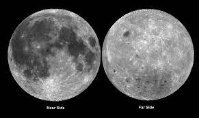

1 / 15
Moon
The moon, Earth's only natural satellite, has captivated humanity for
centuries. Approximately 1/6th the size of Earth, it orbits our planet
at an average distance of 238,855 miles. The moon's surface is a
barren, desolate landscape, marked by craters, mountains, and vast
plains. It lacks a breathable atmosphere and experiences extreme
temperature variations. The moon plays a crucial role in Earth's tides
and has been a source of inspiration for art, culture, and science. It
has also been a target for exploration, with numerous missions
launched to unravel its mysteries, making it an enduring symbol of
celestial wonder.
2 / 15

Moon Near Side
The Moon's near side, the familiar face we see from Earth, showcases
vast lunar plains known as maria, formed by ancient volcanic activity.
Contrasting with the far side, it hosts prominent dark patches and a
wealth of craters, such as the iconic Tycho and Copernicus. The near
side provides a captivating canvas for stargazers and lunar explorers,
offering detailed features that have sparked human fascination for
centuries. Its accessibility has made it a focal point for scientific
study and exploration, marking the starting point for human lunar
missions.
3 / 15

Moon Far Side
The Moon's far side, often called the "dark side," is the hemisphere
permanently hidden from Earth's view. It remains mysterious due to its
concealment, shielded from terrestrial radio signals. Lacking the
prominent dark maria found on the near side, it is characterized by
rugged highlands and impact craters. The far side offers a unique
vantage point for scientific exploration, free from Earth's radio
interference. Its uncharted terrains have become the focus of lunar
missions, unveiling secrets of lunar history and enhancing our
understanding of the solar system's evolution.
4 / 15
Moon Surface/Craters
Moon craters are the lunar surface's signature features, sculpted by
countless cosmic collisions over eons. Ranging from small pockmarks to
colossal basins, these craters reveal the Moon's tumultuous history.
Each crater is a frozen snapshot of celestial impacts, preserving the
moon's geological evolution. Some, like Tycho and Copernicus, stand as
majestic monuments, their intricate details telling tales of ancient
asteroid or comet strikes. These scars, dispersed across the lunar
canvas, serve as celestial archives, providing valuable insights into
both lunar and solar system dynamics.
5 / 15
Moon Day/Night Terminator Line
The moon's day-night terminator line is the ever-shifting boundary
between sunlight and darkness on its surface. As the lunar day
progresses, this line creates a mesmerizing interplay of light and
shadow, revealing the intricate topography. At sunrise, crater rims
and peaks catch the first rays, casting long shadows, while at sunset,
the landscape gradually succumbs to darkness. This dynamic terminator
region holds vital clues for scientific exploration, offering a unique
perspective on the moon's geology and aiding in the understanding of
its complex, cratered terrain.
6 / 15

Moon's Far and Near Side
The Moon's near side, facing Earth, showcases maria and prominent
craters like Tycho. In contrast, the far side, hidden from Earth,
reveals rugged highlands and remains radio-silent. The near side is a
celestial canvas for observation, while the far side, shielded from
Earth's influence, provides unique insights into lunar geology.
Together, they encapsulate the Moon's duality—a visible, explored
face, and a mysterious, uncharted realm.
7 / 15
Seismometer
On the Moon, seismometers are vital tools for studying moonquakes.
Deployed during Apollo missions, they have detected and recorded
seismic activity, shedding light on the Moon's interior. Moonquakes
can be caused by gravitational interactions, meteoroid impacts, or the
cooling and contracting of the lunar crust. Analyzing these seismic
waves helps scientists unravel the Moon's geological history and
composition. Future lunar missions, including seismometers, aim to
deepen our understanding of these intriguing lunar phenomena.
8 / 15
Seismograph
Moonquakes are studied using seismographs on the Moon. Deployed during
Apollo missions, these instruments record seismic waves caused by
various lunar activities, such as meteoroid impacts or the Moon's
gravitational interactions. Analyzing the data helps scientists
understand the Moon's interior structure and composition. Seismographs
play a crucial role in unraveling the mysteries of moonquakes,
contributing valuable insights to lunar geophysics and expanding our
knowledge of celestial bodies beyond Earth.
9 / 15
Apollo 11 Seismic Experiment
The Apollo 11 mission, humanity's historic first moon landing,
included a seismic experiment. Deployed by astronauts Neil Armstrong
and Buzz Aldrin in July 1969, the experiment aimed to study moonquakes
and the Moon's interior. The seismometer transmitted data back to
Earth, providing valuable insights into lunar seismic activity.
Although it operated for a limited duration, it laid the foundation
for subsequent Apollo missions' more sophisticated seismic
experiments, contributing significantly to our understanding of the
Moon's geology and structure.
10 / 15
The Lunar Eclipse
A lunar eclipse is a celestial spectacle where Earth positions itself
between the Sun and the Moon, causing the Moon to traverse through
Earth's shadow. As sunlight refracts through our atmosphere, it
imparts a reddish tint to the Moon during totality, earning it the
nickname "blood moon." This captivating event, observable from various
locations on Earth, serves as a testament to celestial mechanics and
cultural symbolism, often inspiring wonder and fascination throughout
human history.
11 / 15
Lunar Geology
Lunar geology delves into the study of the Moon's surface features,
revealing a fascinating landscape shaped by ancient volcanic activity,
impact cratering, and other geological processes. Moon rocks,
collected from Apollo missions, provide insight into its composition.
Maria, vast plains formed by ancient lava flows, coexist with rugged
highlands and a myriad of craters. Understanding lunar geology not
only unveils the Moon's history but also contributes to broader
insights into planetary formation and evolution across the solar
system.
12 / 15
Lunar Atmosphere
The Moon's atmosphere, an exosphere, is an ethereal blend of trace
gases like helium and neon. Remarkably thin, it lacks weather
phenomena and substantial air pressure. This scant atmosphere allows
direct exposure to solar and cosmic radiation, shaping lunar geology.
Devoid of a protective shield, the lunar atmosphere plays a crucial
role in understanding the Moon's surface characteristics and
contributes to broader planetary atmospheric research in our cosmic
neighborhood.
13 / 15
Moon Phases and Cycles
Moon phases and cycles illustrate the Moon's changing appearance
during its 29.5-day orbit around Earth. This cosmic dance includes
waxing and waning crescents, first and last quarters, and the full
moon. Influencing tides and guiding ancient calendars, these phases
derive from the Moon's position relative to the Sun. The recurring
patterns, both scientifically and culturally significant, enrich our
understanding of celestial mechanics and have long played a role in
human timekeeping and cultural traditions worldwide.
14 / 15
Moon and Tides
The Moon plays a pivotal role in generating Earth's tides through
gravitational forces. As it orbits, the Moon's gravitational pull
creates a tidal bulge on the side facing it, causing high tide.
Simultaneously, a second bulge occurs on the opposite side due to
centrifugal force, creating another high tide. The areas between
experience low tide. Understanding this dynamic relationship between
the Moon and tides is crucial, impacting coastal ecosystems,
navigation, and illustrating the profound influence celestial bodies
exert on our planet.
15 / 15

Moon Missions
Moon missions, spanning from Apollo's historic lunar landings to
recent robotic explorations, continually unravel lunar mysteries.
Apollo missions, beginning in the 1960s, marked the first human
footsteps on the Moon. Contemporary endeavors like China's Chang'e and
NASA's Lunar Reconnaissance Orbiter deepen our understanding. Future
plans, including the Artemis program, herald a renewed era of lunar
exploration, aiming for sustainable presence and scientific
breakthroughs, expanding humanity's reach into the cosmos.